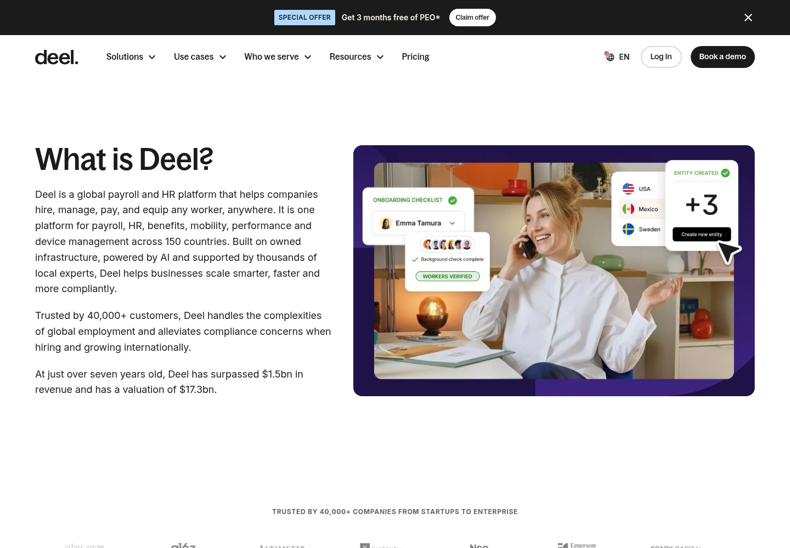

Official live-site observations · 13 October 2026
Returns deserve
clear next steps.
Bagoss headings. Spacious surfaces. Warm neutrals. Dark pill actions. Blue, purple and yellow with a purpose.
Ayo Ahmed - Independent concept
Pickup missed
Owner: synthetic supplier
Next action: reserve a recovery slot
Deadline: explicit simulation clock
Visual specimen only. The working app enforces prerequisites.
Measured palette
#1B1B1B
#FAF4EE
#B1D8FC
#5938B7
#C4B1F9
#FFE27C
Measured computed styles on Deel's live press and Borderless IT pages. Palette subset, not inferred colour names from an unrelated brand guide.
Typography
Live h1: Bagoss Condensed · 56px / 58.8px · weight 500
Inter body copy keeps operational detail legible. Status, action, owner and deadline remain visible together.
Official hosted fonts with Arial fallback. Font redistribution permission was not established.
Layout cues
Pixel evidence

Official press hero and public workflow illustration. Authenticated internal UI was not accessed.
Source & usage boundaries
This lab mirrors current public language while stating its independent status. Real source photography is evidence only; all app people, suppliers and evidence labels are synthetic.
Official press · Official rebrand · Full measurement guide
The blue specimen hero is an adaptation of the measured palette. It is not a copy of the white press hero.